We come to you
Your classroom, gym, library or rec room becomes the lab. No bus, no field-trip forms. Families told us the best part: it comes to them.
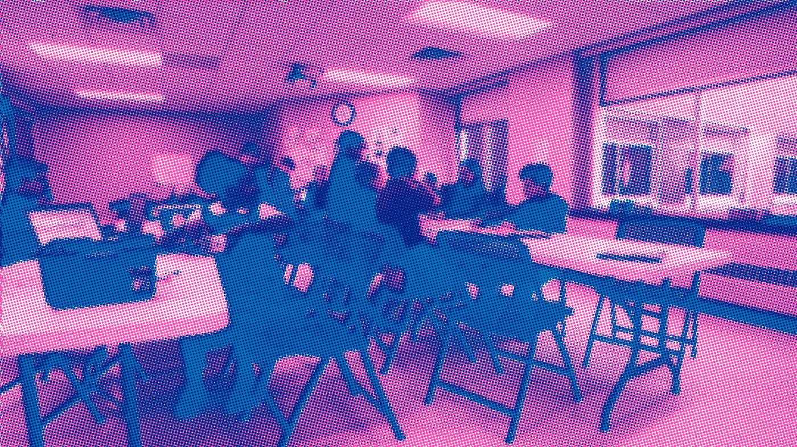
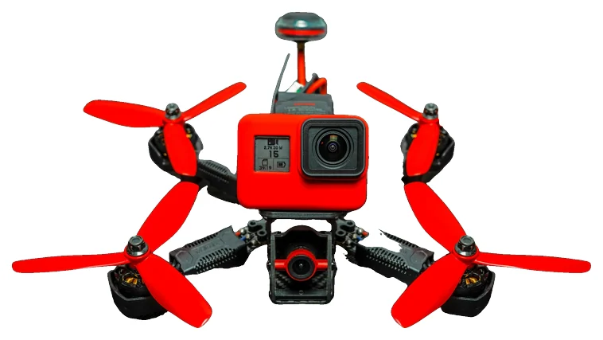
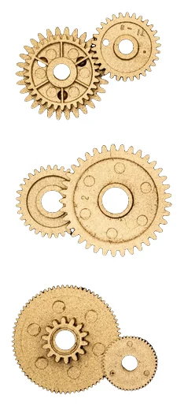

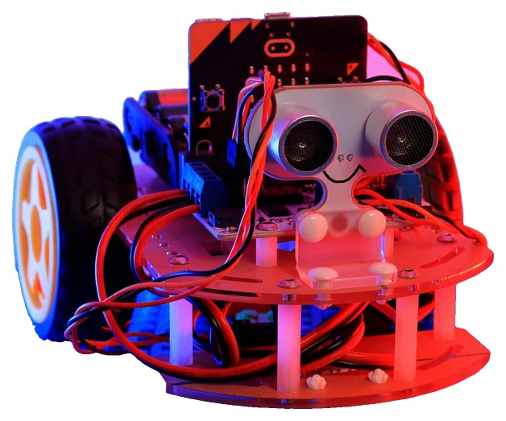
createMPLS brings hands-on robotics, coding, 3D printing, electronics, sound tech and drones into Minneapolis schools and community sites. Kids build real things with real tools, at no cost to students or families.
We show up at your school or community site with instructors, tools and a plan. In-school courses during the day. STEM Learning Labs after school and in summer. Every session runs the same honest loop: make it, test it, change one thing, show it off.
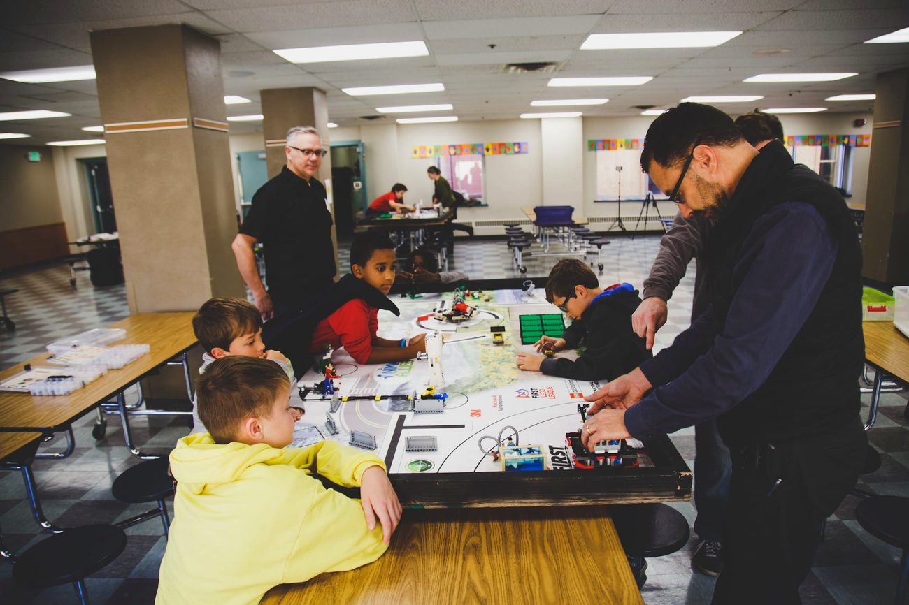
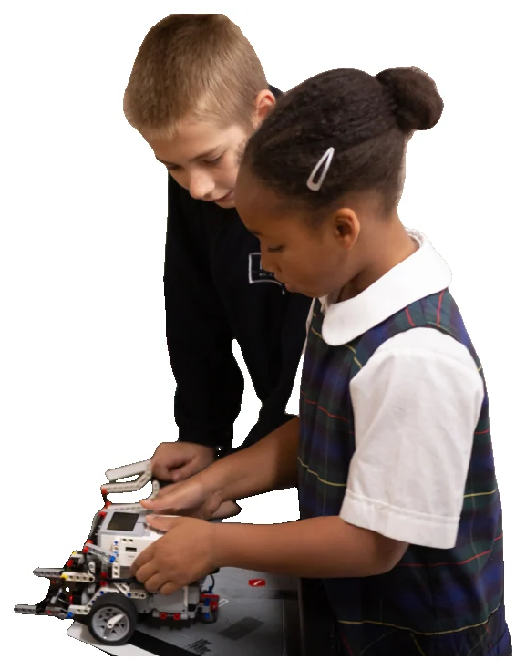
Your classroom, gym, library or rec room becomes the lab. No bus, no field-trip forms. Families told us the best part: it comes to them.
Motors, micro:bits, 3D printers, mics and flight simulators. Short demo, long build time, and everybody explains what they made.
There is no cost to students or families. Schools and community partners host; donors and volunteers keep the parts bin full.
A classroom turns into a robot pit. A cafeteria turns into a sound studio. A rec center turns into a print shop. And the kids who built it all get to show the neighborhood how it works.
— that's the whole idea. ✌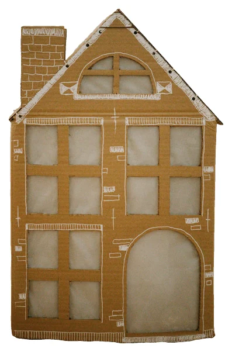
Every createMPLS program ends with something real to show. Here are twelve things a kid could walk out with, from Pre-K to Grade 12.
Every program is free to students and families. Pick a few, and we'll plan the rest with you.
Send my list →Every tally mark behind this card is one of them. Yes, we drew all 5,657.
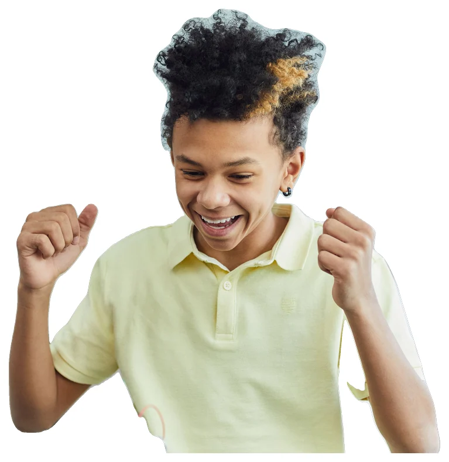
You bring the kids and a room. We bring instructors, tools and a plan built for your space, during the school day or after it. No cost to your students or their families.
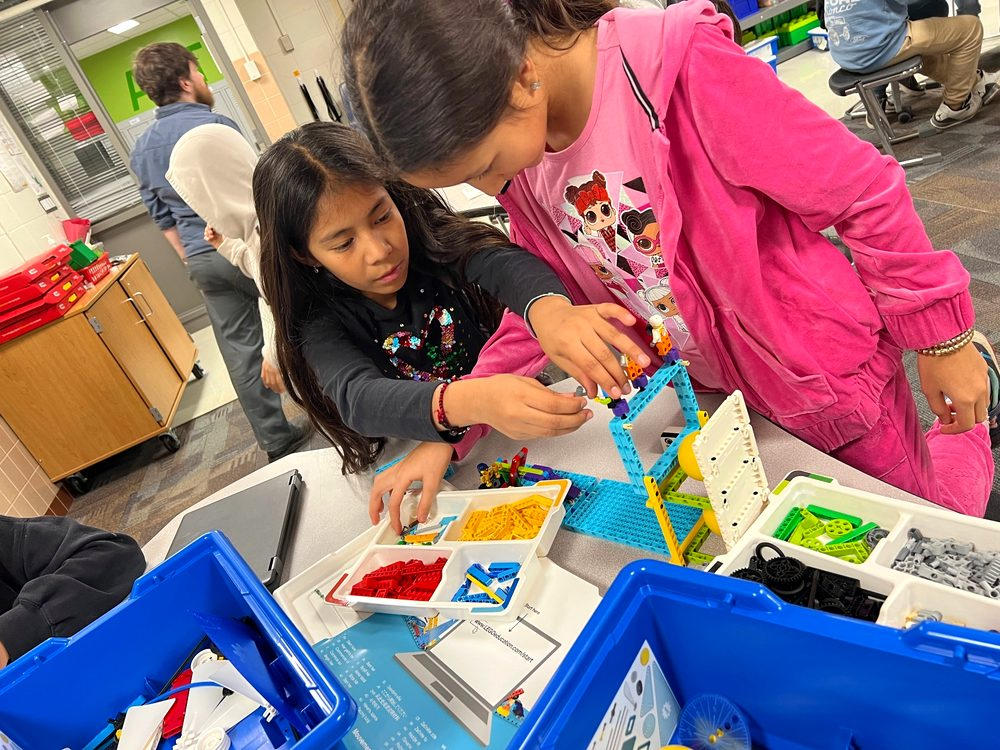
Coach a robotics team, help at a build day, or bring your trade into the room for an afternoon. You don't need to be an engineer. You need to be curious.
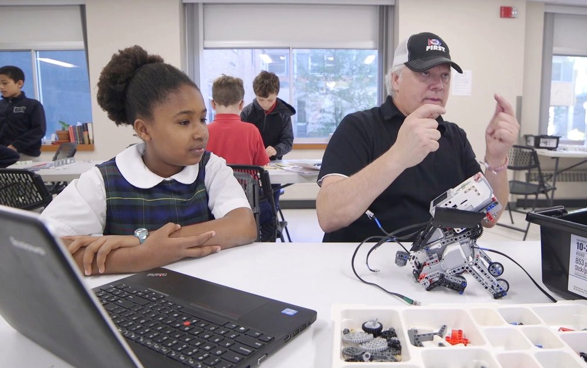
Gifts keep every program free for students and families. createMPLS is a 501(c)(3); donations are tax-deductible.
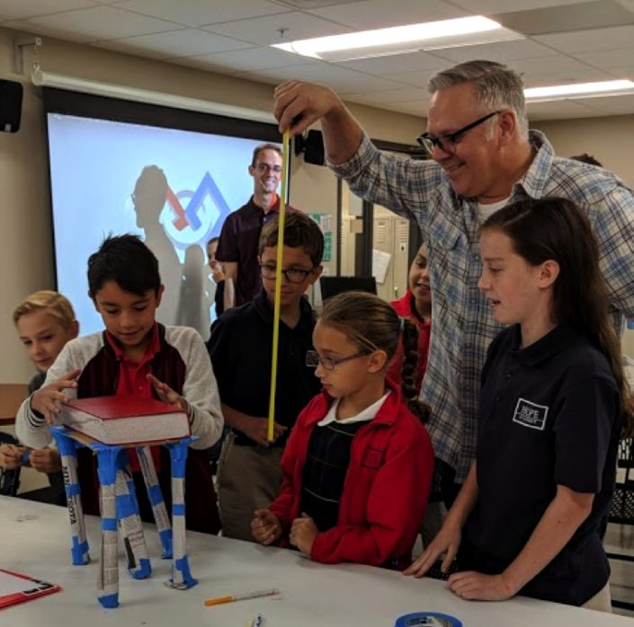